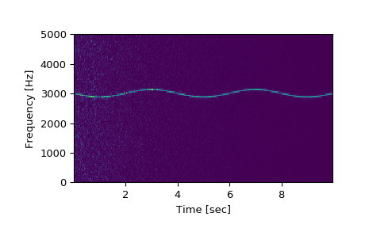
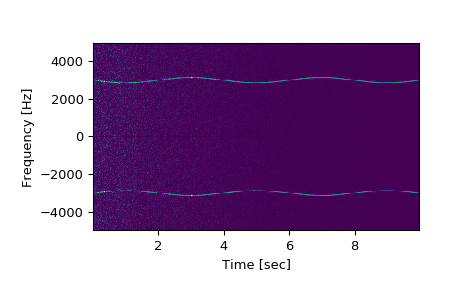

scipy.signal.spectrogram¶
-
scipy.signal.spectrogram(x, fs=1.0, window=('tukey', 0.25), nperseg=None, noverlap=None, nfft=None, detrend='constant', return_onesided=True, scaling='density', axis=-1, mode='psd')[source]¶ Compute a spectrogram with consecutive Fourier transforms.
Spectrograms can be used as a way of visualizing the change of a nonstationary signal’s frequency content over time.
- Parameters
- xarray_like
Time series of measurement values
- fsfloat, optional
Sampling frequency of the x time series. Defaults to 1.0.
- windowstr or tuple or array_like, optional
Desired window to use. If window is a string or tuple, it is passed to
get_windowto generate the window values, which are DFT-even by default. Seeget_windowfor a list of windows and required parameters. If window is array_like it will be used directly as the window and its length must be nperseg. Defaults to a Tukey window with shape parameter of 0.25.- npersegint, optional
Length of each segment. Defaults to None, but if window is str or tuple, is set to 256, and if window is array_like, is set to the length of the window.
- noverlapint, optional
Number of points to overlap between segments. If None,
noverlap = nperseg // 8. Defaults to None.- nfftint, optional
Length of the FFT used, if a zero padded FFT is desired. If None, the FFT length is nperseg. Defaults to None.
- detrendstr or function or False, optional
Specifies how to detrend each segment. If
detrendis a string, it is passed as the type argument to thedetrendfunction. If it is a function, it takes a segment and returns a detrended segment. Ifdetrendis False, no detrending is done. Defaults to ‘constant’.- return_onesidedbool, optional
If True, return a one-sided spectrum for real data. If False return a two-sided spectrum. Defaults to True, but for complex data, a two-sided spectrum is always returned.
- scaling{ ‘density’, ‘spectrum’ }, optional
Selects between computing the power spectral density (‘density’) where Sxx has units of V**2/Hz and computing the power spectrum (‘spectrum’) where Sxx has units of V**2, if x is measured in V and fs is measured in Hz. Defaults to ‘density’.
- axisint, optional
Axis along which the spectrogram is computed; the default is over the last axis (i.e.
axis=-1).- modestr, optional
Defines what kind of return values are expected. Options are [‘psd’, ‘complex’, ‘magnitude’, ‘angle’, ‘phase’]. ‘complex’ is equivalent to the output of
stftwith no padding or boundary extension. ‘magnitude’ returns the absolute magnitude of the STFT. ‘angle’ and ‘phase’ return the complex angle of the STFT, with and without unwrapping, respectively.
- Returns
- fndarray
Array of sample frequencies.
- tndarray
Array of segment times.
- Sxxndarray
Spectrogram of x. By default, the last axis of Sxx corresponds to the segment times.
See also
periodogramSimple, optionally modified periodogram
lombscargleLomb-Scargle periodogram for unevenly sampled data
welchPower spectral density by Welch’s method.
csdCross spectral density by Welch’s method.
Notes
An appropriate amount of overlap will depend on the choice of window and on your requirements. In contrast to welch’s method, where the entire data stream is averaged over, one may wish to use a smaller overlap (or perhaps none at all) when computing a spectrogram, to maintain some statistical independence between individual segments. It is for this reason that the default window is a Tukey window with 1/8th of a window’s length overlap at each end.
New in version 0.16.0.
References
- 1
Oppenheim, Alan V., Ronald W. Schafer, John R. Buck “Discrete-Time Signal Processing”, Prentice Hall, 1999.
Examples
>>> from scipy import signal >>> from scipy.fft import fftshift >>> import matplotlib.pyplot as plt
Generate a test signal, a 2 Vrms sine wave whose frequency is slowly modulated around 3kHz, corrupted by white noise of exponentially decreasing magnitude sampled at 10 kHz.
>>> fs = 10e3 >>> N = 1e5 >>> amp = 2 * np.sqrt(2) >>> noise_power = 0.01 * fs / 2 >>> time = np.arange(N) / float(fs) >>> mod = 500*np.cos(2*np.pi*0.25*time) >>> carrier = amp * np.sin(2*np.pi*3e3*time + mod) >>> noise = np.random.normal(scale=np.sqrt(noise_power), size=time.shape) >>> noise *= np.exp(-time/5) >>> x = carrier + noise
Compute and plot the spectrogram.
>>> f, t, Sxx = signal.spectrogram(x, fs) >>> plt.pcolormesh(t, f, Sxx) >>> plt.ylabel('Frequency [Hz]') >>> plt.xlabel('Time [sec]') >>> plt.show()
Note, if using output that is not one sided, then use the following:
>>> f, t, Sxx = signal.spectrogram(x, fs, return_onesided=False) >>> plt.pcolormesh(t, fftshift(f), fftshift(Sxx, axes=0)) >>> plt.ylabel('Frequency [Hz]') >>> plt.xlabel('Time [sec]') >>> plt.show()
